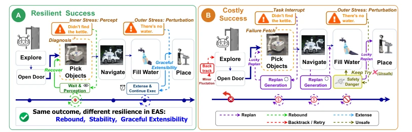
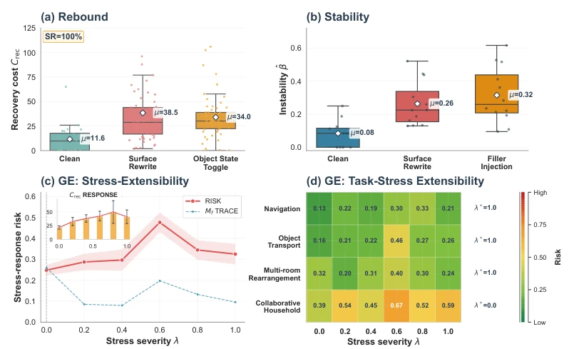
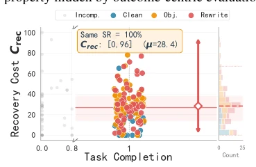
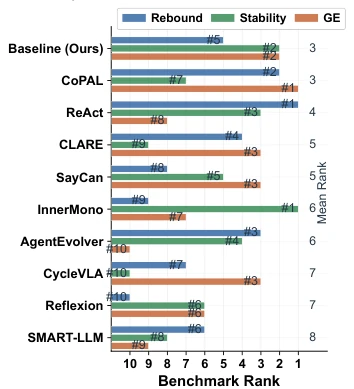
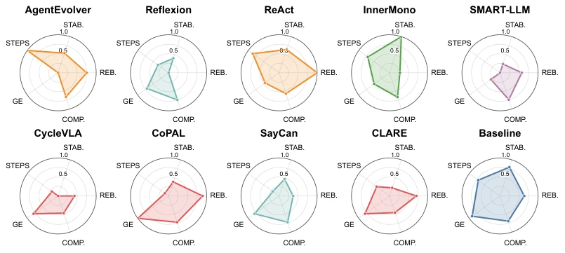

This paper pours cold water on the embodied AI community: relying solely on Success Rate (SR) is akin to looking only at exam scores without examining the paper process, completely obscuring the distinction between 'getting lucky guessing right' and 'genuine capability'. The concept of Resilience proposed by the authors indeed hits the pain point, after all, in an open world, who can guarantee not crashing? However, decomposing system resilience into Rebound, Stability, and Graceful Extensibility, while sounding sophisticated, in practice resembles performing a CT scan on a black-box model, where computational overhead and the quality of dependent LLM Judge signals pose significant risks. More ironically, experimental results prove that currently no model is a 'hexagon warrior' (all-rounder); optimizing one metric often sacrifices another, directly refuting models claiming 'general robustness'. Nevertheless, proposing a set of quantifiable diagnostic tools and demonstrating their ability to guide optimization is far more substantial than merely accumulating SOTA metrics, at least informing developers where to fix rather than blindly tuning parameters.
Existing Embodied AI Systems (EAS) evaluation overly relies on result-oriented metrics, such as Success Rate (SR) or safety scores, which compress diverse execution trajectories into rough scores, leading to an inability to distinguish 'fragile success' (relying on luck or brute-force retry) from 'trusted adaptation' [22, 23]. In open physical environments, continuous external interference and internal uncertainty make system recovery capability, stability, and extensibility crucial, while existing evaluations often ignore these dynamic processes. For instance, although Reflexion and CoPAL have similar success rates, their recovery costs differ vastly, and existing methods cannot capture this process-level difference [14, 28]. Furthermore, traditional resilience engineering concepts (such as Rebound, Robustness proposed by Woods) have not been effectively implemented in embodied task execution, lacking fine-grained quantification standards specific to EAS [33]. Therefore, there is an urgent need for a systematic evaluation framework capable of revealing execution process pathologies and distinguishing different resilience characteristics to guide more reliable EAS deployment.

Figure 1: Outcome hide process resilience difference in EAS. (A) A resilient success trajectory handles inner and outer stress through resilient mechanisms, (B) A costly success relies on repeated backtrack, replan and unsafe behaviors.
The paper proposes a resilience evaluation framework based on execution dynamics, core components including the 'Resilience Metric System' and 'Resilience Evaluation Layer'. The overall process is: first construct a 'Stage Baseline', utilizing clean or reference trajectories to establish statistical references for each Local Execution Anchor; subsequently, collect trajectories, logs, monitoring signals, and LLM Judge feedback through non-invasive probes; finally, map dynamic signals to three resilience dimensions. Innovations include: 1) Rebound metric: defines Recovery Cost (Crec), by decomposing cognitive, physical, and state debt, utilizing Mahalanobis distance to eliminate dimensional differences, quantifying the extra work required for the system to recover from perturbations; 2) Stability metric: defines Policy Stability (β), based on value functions and TD residuals to calculate the sensitivity of execution fluctuations to perturbations, capturing frequent replanning or progress oscillations; 3) Graceful Extensibility metric: constructs Stress Response Curve (Mf(λ)) and Stress Capacity (λ*), evaluating whether performance degradation under stress is smooth rather than crashing through statistical Operational Margin. The evaluation layer converts the execution process into diagnosable quantifiable signals by controlling stress intensity grids.

Figure 3: Resilience metrics construct validity results (zoom in for better view).
Experiments were conducted on Habitat-Sim 3.0, covering 400 household tasks, testing 10 representative EAS methods (such as Reflexion, CoPAL, ReAct, etc.). Results show that existing metrics (SR) cannot distinguish resilience differences; for example, Reflexion and CoPAL have similar SR, but the former's recovery cost is 4.8 times that of the latter. In perturbation tests, physical perturbation raised the average recovery cost from 11.6 to 36.3, while semantic perturbation led to increased instability (Δβ=0.32). Benchmark tests revealed unique 'resilience fingerprints' for each method, such as CoPAL performing excellently in Rebound and Extensibility, while InnerMono has the best Stability but high recovery cost. Furthermore, diagnostic optimization experiments based on metrics indicate that targeted improvements (such as feedback-guided recovery, consistent state recording) can significantly reduce recovery cost or improve stability, confirming the diagnostic value of the evaluation framework.

Figure 2: Different Crec under outcomes.

Figure 4: Resilience benchmark landscape.

Figure 5: The Resilience Diagnosis. Visualizing the distinct behavioral archetypes of EASs.